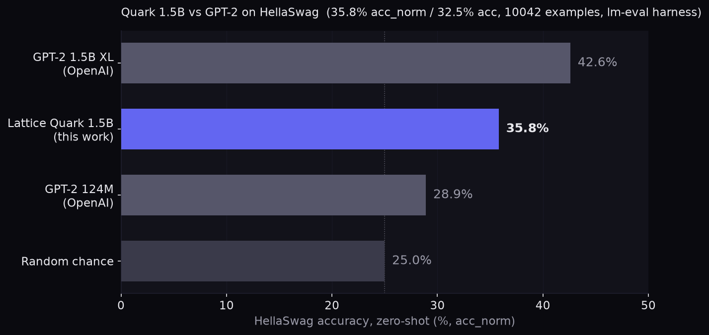

Lattice Quark
1.5B trained 100% from scratch — no pretrained weights anywhere. 26 layers, ~2B tokens of pretraining on consumer hardware, then 465 iterations of instruction tuning. This is the honest version of "we built a model".
Quark vs the fine-tunes: same 22 prompts, no system prompt
The same identity/factual/chat battery we ran on Pulse and Spark — greedy decoding, no system prompt, chat-turn format. Quark's knowledge comes from ~2B tokens of pretraining; the others inherit Qwen's. That's the whole difference in one chart.

Prompt-by-prompt
| Category | Prompt | Result |
|---|---|---|
| Identity | Who are you? / What is your name? | "I'm Lattice Quark, built by Lattice Systems." |
| Identity | Are you ChatGPT? | Denies, correctly identifies as Lattice |
| Identity | What company built you? | "Lattice Systems" |
| Identity | Who made you? / Who created you? | "a team of developers" — no Lattice |
| Identity | Are you made by Alibaba? | Denies Alibaba, then says "designed by Google" |
| Factual | Capital of France / Japan | Paris, Tokyo |
| Factual | Chemical symbol for gold / continents | Au, seven |
| Factual | Capital of Australia | "Sydney" |
| Factual | 17 + 25 / 9 × 8 | Explains methods, never computes |
| Factual | Who wrote Romeo and Juliet? | "Eugène Delacroix" |
| Chat | hello in Spanish / opposite of hot / a planet / stop sign / "only 42" | 5/5 |
| Chat | Complete: "The sky is" | "a beautiful and serene place" |
Quark vs GPT-2: a standard benchmark at last
The 22-prompt battery above is our own home-grown eval. To see how the from-scratch effort stacks up outside our own yard, we ran Quark through HellaSwag, the commonsense benchmark OpenAI's GPT-2 is routinely measured on, using the same lm-evaluation-harness protocol: zero-shot, raw text (no chat template), loglikelihood scoring over all four continuations.

Protocol: zero-shot, no chat template, acc_norm headline metric, full 10,042-example validation split, batch 16, greedy loglikelihood via the lm-evaluation-harness (v0.4.12) through
mlx_lm evaluate. Weights evaluated: the public
4-bit MLX build,
so this measures exactly what you can download.
Honest caveats: the GPT-2 reference points come from published harness runs of the OpenAI weights (~28.9% for 124M; ~42.6% zero-shot for the 1.5B XL, as reported in the GPT-3 paper era), not runs we executed ourselves. Quark is SFT-tuned for chat while GPT-2 was a pure base model, which barely moves loglikelihood scoring but is worth stating. And HellaSwag at this level is still far from strong commonsense; it says "better than 2019's smallest", not "competitive with today".